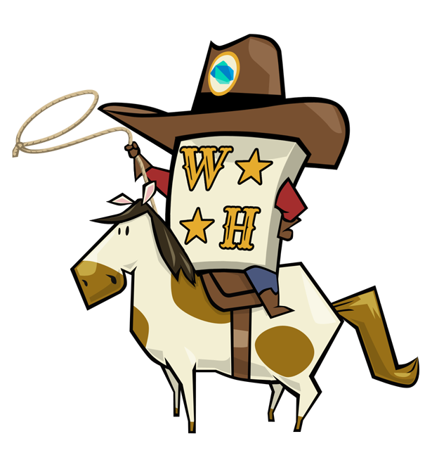

<link rel="import" href="when_online.html">

<polymer-element name="wordherd-home">
  <template>
    <h1>Giddyup GDG!</h1>
    
    <p>
      <a class="button" href="#/sologames">Solo Games</a>
    </p>
      
    <when-online>
      <div class="for-online">
        <p>
          <a class="button" href="#/newgame">New Multiplayer Game</a> <!-- TODO: replace with a custom element that helps normalize these paths -->
        </p>
        <p>
          <a class="button" href="#/matches">Matches</a>
        </p>
      </div>
      <div class="for-offline">
        <p>
          Go online to play multiplayer
        </p>
      </div>
    </when-online>
    
    <p>
      
    </p>
  </template>
  <script type="application/dart;component=1" src="wordherd_home.dart"></script>
</polymer-element>
